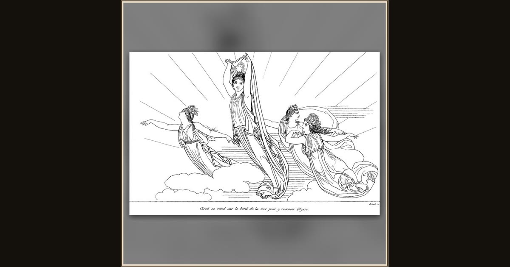

Circe Goes to Meet Odysseus
John Flaxman (design); Étienne Achille Réveil (engraving, c. 1835) · c. 1835 · Wikimedia Commons
The French caption names Circe going to meet Odysseus in Book XII; the rays echo Book VIII’s dawn. Explore its place in Book VIII of the Odyssey.